Gemini Notebook이 왜 필요한가: 모른다고 말할 수 있는 AI
Gemini Notebook은 구글의 자료 기반 조사 도구입니다. 예전에는 NotebookLM으로 불렸고, 지금도 고객센터에는 두 이름이 함께 남아 있습니다. 사용법 자체는 단순합니다. 새 노트북을 만들고, 유튜브·PDF·웹페이지를 소스로 추가한 뒤, 그 소스를 근거로 질문하면 됩니다.
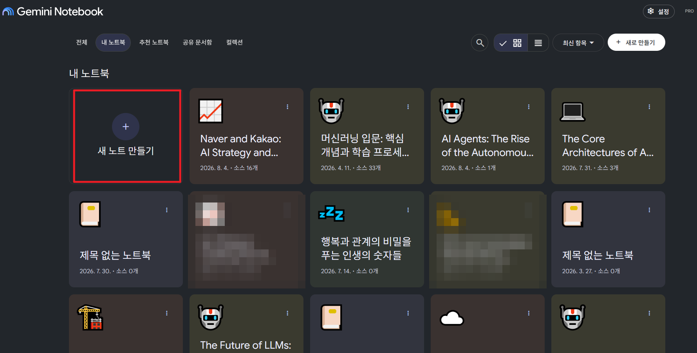
여기까지만 보면 다른 AI 챗봇과 크게 다르지 않아 보입니다. 차이는 소스에 없는 질문을 던졌을 때 드러납니다. 유튜브 영상 하나를 소스로 넣고 "지금 사과 가격은 얼마야?"처럼 영상과 전혀 관계없는 질문을 하면, Gemini Notebook은 확인할 수 없다고 답합니다.
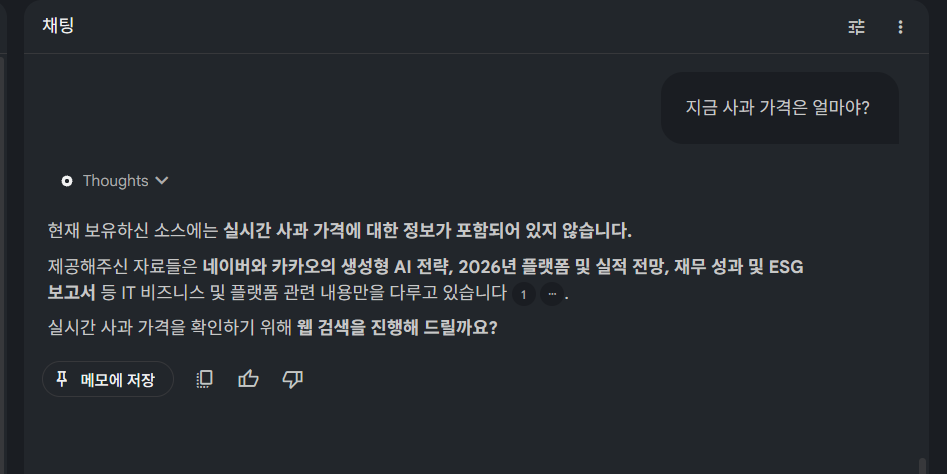
이 반응이 실무에서는 가장 중요한 기능입니다. 모르는 것을 모른다고 말하지 못하는 AI는 업무에 그대로 맡기기 어렵습니다. 그럴듯하게 지어낸 답을 사실처럼 받아들이는 순간, 검증 비용이 오히려 늘어나기 때문입니다. Gemini Notebook은 등록된 소스 범위 안에서만 답하도록 설계되어 있습니다. 이것이 RAG(Retrieval-Augmented Generation), 즉 자료를 먼저 검색하고 그 범위 안에서 답을 생성하는 방식입니다.
좋은 소스를 빠르게 모으는 법: LLM으로 자료 조사하기
Gemini Notebook은 자료를 정리하고 검증하는 데는 강하지만, 처음부터 여러 자료를 폭넓게 찾아오는 데는 다른 도구가 더 유리합니다. ChatGPT, Claude, Gemini 같은 일반 LLM 화면에서 먼저 조사를 시키고, 그 결과에서 신뢰할 만한 소스만 추려 Gemini Notebook으로 옮기는 방식이 효율적입니다.
- LLM에게 조사를 요청한다 (예: "네이버에서 요즘 집중하는 신사업에 대해서 찾아줘")
- 답변 본문은 읽지 않고 곧바로 "활용한 소스 알려줘"라고 재질문한다
- 복사하기 편하도록 "소스 url만 코드블럭으로 전달해줘"라고 요청한다
이렇게 하면 보통 10개 안팎의 URL이 코드블록 하나에 정리되어 나옵니다. 줄바꿈되어 있는 상태 그대로 복사해서 Gemini Notebook의 소스 추가 화면에 한 번에 붙여넣으면, 여러 URL이 동시에 소스로 등록됩니다.
한 단계 더: 딥리서치로 소스의 질을 높이기
일반 조사보다 더 깊이 있는 자료가 필요하다면 딥리서치(심층연구) 기능을 사용합니다. 세 서비스 모두 딥리서치 버튼은 눈에 잘 띄지 않는 메뉴 안에 있으니, 화면 위치를 참고해 두면 좋습니다.
| ChatGPT | 무료 버전에서도 심층리서치 사용 가능. 입력창 왼쪽 + 버튼을 누르면 메뉴가 나온다. |
|---|---|
| Claude | 유료 버전에서만 연구(Research) 기능 사용 가능. 입력창 왼쪽 + 버튼 메뉴 안에 있다. |
| Gemini | 무료 버전에서도 Deep Research 사용 가능. 입력창 메뉴를 펼치면 나온다. |
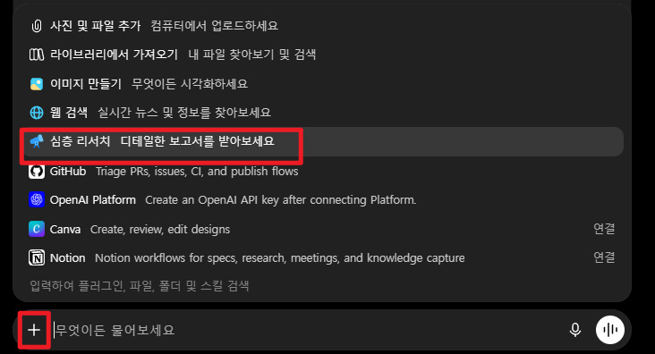
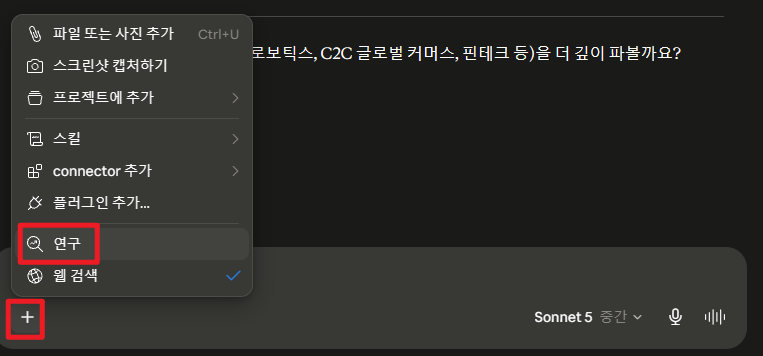
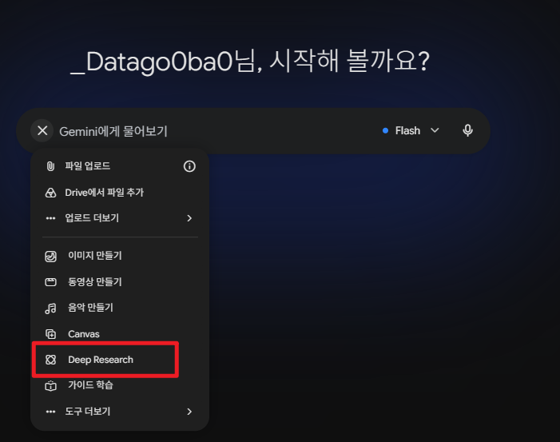
무료 기능의 제공 범위와 정책은 서비스사 정책에 따라 언제든 바뀔 수 있으므로, 실제 사용 시점에 화면에서 다시 확인하는 것이 안전합니다. 여기서 자주 놓치는 부분이 있습니다. 딥리서치 기능을 켜기 전에, 어떻게 질문할지부터 물어봐야 한다는 점입니다.
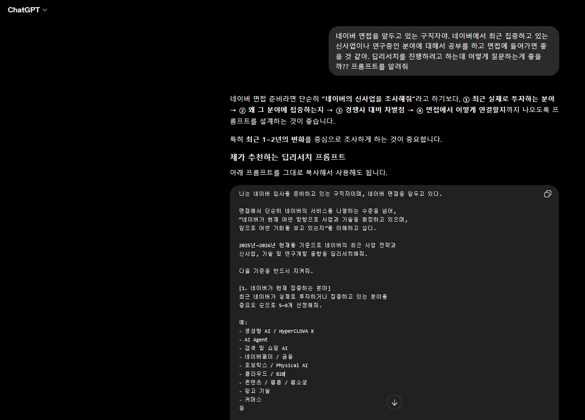
딥리서치 켜기 전에 프롬프트 설계부터 물어보면, 조사 범위·출처 우선순위·결과물 형식까지 갖춘 훨씬 정교한 질문이 만들어집니다. 아래는 이 방식으로 실제 완성된 프롬프트 예시입니다. 회사명과 세부 항목은 필요에 맞게 바꿔 쓸 수 있습니다.
이처럼 조사 목적(면접 준비), 검증 기준(공식 자료 우선순위), 결과물 형식(핵심 질문·브리핑)까지 구체적으로 지정하면, 단순히 "조사해줘"라고 요청했을 때와는 결과물의 밀도 자체가 달라집니다.
이 프롬프트를 실제로 실행하면, 대부분의 서비스는 곧바로 조사를 시작하지 않고 조사 계획부터 먼저 보여줍니다. 계획이 마음에 들지 않으면 이 단계에서 수정하고 시작하면 됩니다.
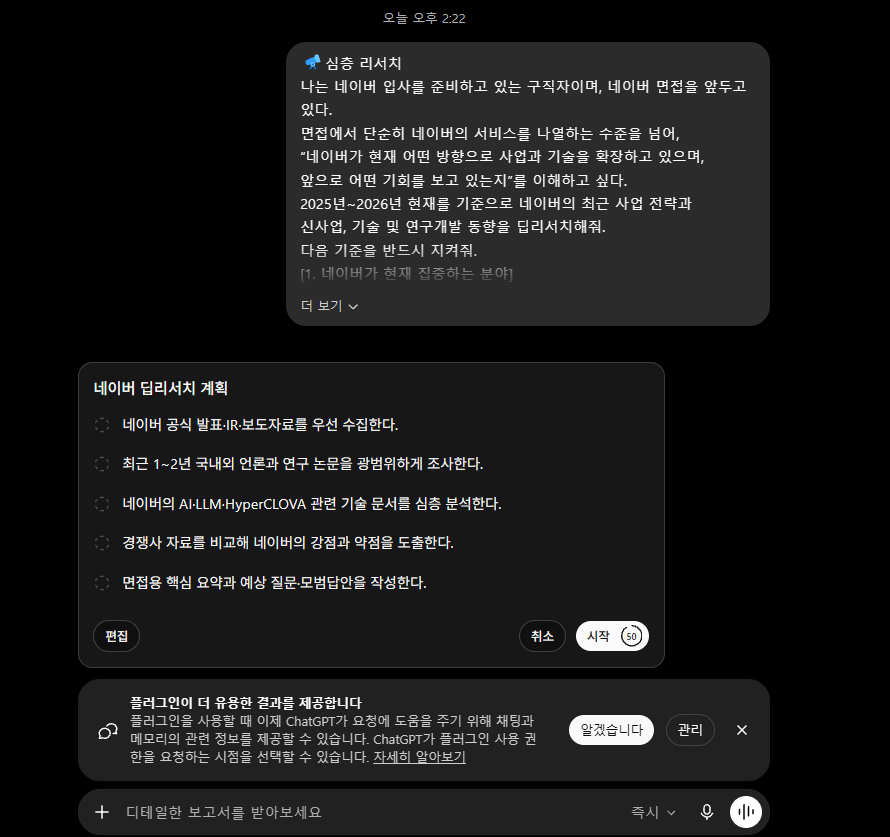
계획을 확인하고 실행하면 보통 5~10분 정도 걸리고, 완료되면 근거와 출처가 표시된 리포트 형태의 결과물이 나옵니다.
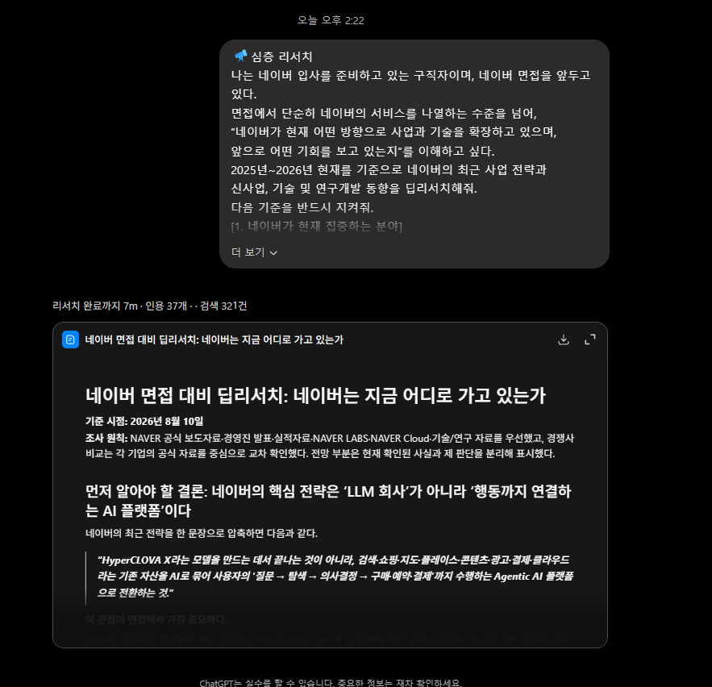
딥리서치 결과에서 소스 URL만 뽑아 Gemini Notebook으로 옮기기
딥리서치가 끝나면 결과 본문을 읽기 전에 다음 요청부터 합니다.
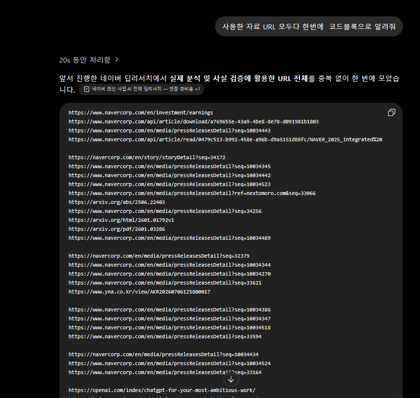
이렇게 받은 URL 목록을 그대로 복사해 Gemini Notebook의 소스 추가 화면에 붙여넣으면 됩니다. 줄바꿈된 여러 URL을 한 번에 붙여넣어도 각각 별도의 소스로 인식됩니다. 다만 URL을 붙여넣기 전에 다음을 한 번 확인하는 것이 좋습니다.
- 실제로 열리는 URL인가
- 검색 결과의 AI 요약이 아니라 원문 링크인가
- 로그인이나 유료 구독 없이 본문을 읽을 수 있는가
- 같은 보도자료를 반복 인용한 중복 기사는 아닌가
URL은 많을수록 좋은 것이 아닙니다. 품질과 관점이 다른 3~8개 정도로 시작하는 편이 오히려 정리하기 쉽습니다.
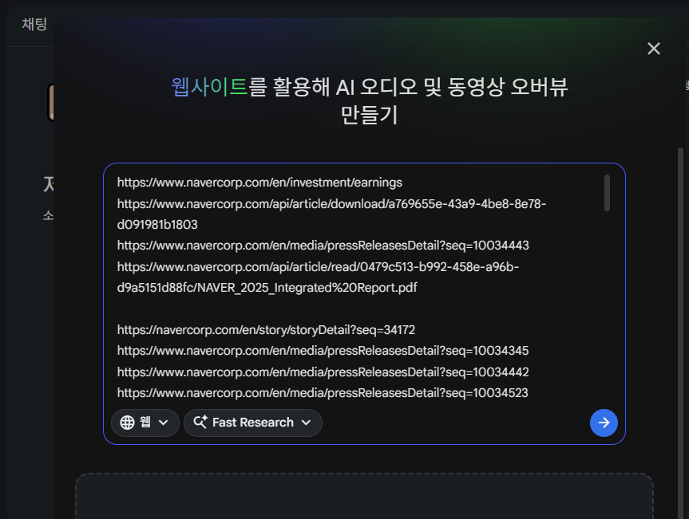
Gemini Notebook 안에서 자료 정리하기
소스가 등록되면 이제 그 안에서 필요한 내용을 질문하고 자료를 만들어 정리합니다. 자주 쓰는 질문 형태는 다음과 같습니다.
답변에 달린 인용 번호는 눌러서 원문 위치를 직접 확인하는 것이 좋습니다. AI가 만든 요약만 읽고 넘어가면, 소스를 등록한 의미가 절반은 사라집니다. 채팅 외에도 Gemini Notebook의 스튜디오 기능을 활용하면 같은 소스를 다른 형태의 결과물로 바꿀 수 있습니다. 다만 이 기능들은 모두 원문을 대체하지 않으므로, 숫자·고유명사·조건은 반드시 원문에서 다시 확인해야 합니다.
마인드맵
자료 전체의 구조와 개념 관계를 한눈에 훑어볼 때 사용합니다.
Audio Overview
이동 중 듣기 좋은 대화 형식의 요약. 형식·분량·집중할 부분을 직접 지정할 수 있습니다.
Video Overview
자료의 흐름을 시각 자료와 함께 짧은 영상으로 요약합니다. 팀 킥오프에 쓰기 좋습니다.
슬라이드 자료
소스 내용을 발표용 슬라이드로 정리합니다. 문구와 수치는 그대로 쓰기 전에 다시 검토합니다.
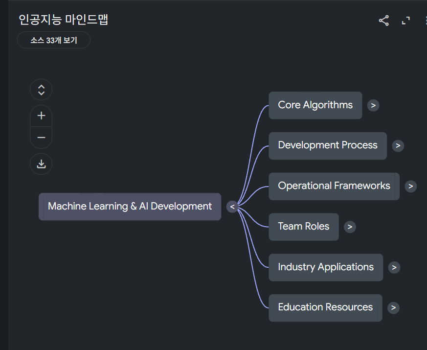
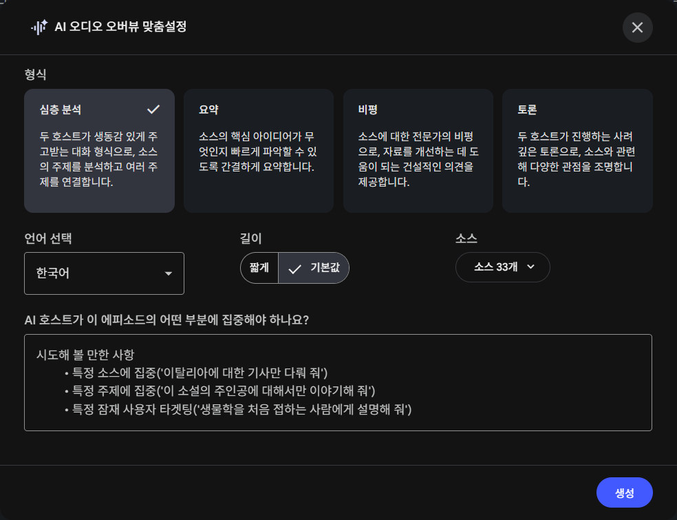
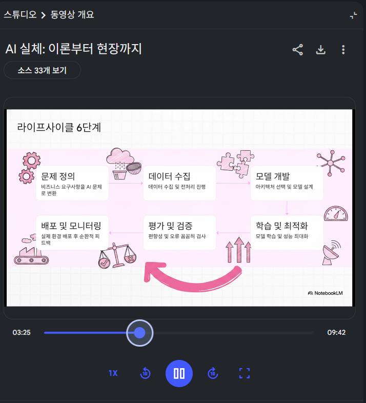
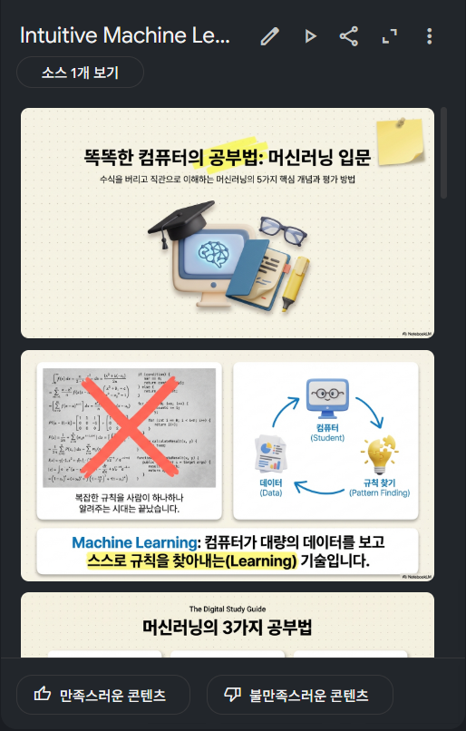
계정과 배포 상태에 따라 화면 구성이나 제공 기능은 달라질 수 있습니다.
더 잘 쓰고 싶다면: 자료의 질이 AI보다 중요하다
Gemini Notebook을 웹 화면에서만 쓰는 것은 이 도구가 가진 능력의 일부만 사용하는 것입니다. 더 깊이 활용하려면 개인 위키, 과거 작업물, 프로젝트 자료 등을 평소에 잘 정리해 두는 습관이 먼저 필요합니다. 좋은 답은 좋은 소스에서 나오기 때문입니다.
웹 화면 활용에서 PC 설치형 활용으로 넘어가는 흐름은 Antigravity 실무 시작 가이드에서 이어서 다룹니다.
정리
AI를 잘 쓴다는 것은 결국 세 가지로 요약됩니다.
- 모르는 것을 모른다고 답할 수 있는 도구를 쓴다 (RAG)
- 딥리서치로 좋은 소스를 먼저 확보하고, 소스 URL만 추려서 옮긴다
- AI의 요약을 그대로 믿지 않고, 인용을 눌러 원문을 확인한다
기업 임직원 교육이나 취업 준비 과정에 AI 리서치 실습을 도입하고 싶다면
현재 반복하는 조사·리서치 업무를 알려주시면, 어떤 도구를 어떤 순서로 도입할지 함께 정리해드립니다.